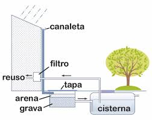
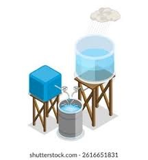

Capta el agua, Gana la Vida.
Usa nuestra herramienta para estimar tu potencial de captación de agua de lluvia y contribuye a la sostenibilidad hídrica de tu comunidad.
¡QUIERO CALCULAR MI POTENCIAL!
El Problema de la Escasez
?
¿Qué es Escasez Hídrica?
Es la insuficiencia de recursos hídricos para satisfacer a la población.
Es la insuficiencia de recursos hídricos para satisfacer a la población.
Escasez Crítica en Zinacantepec
La escasez de agua es reportada como crítica y afecta directamente la vida diaria y las finanzas de los habitantes. Comunidades como San Cristóbal Tecolitl, San Matías Transfiguración, Barrio El Calvario, Barrio de San Miguel y La Loma sufren servicio intermitente. Esto se debe a la inoperancia de pozos por adeudos a la CFE y la falta de pipas operativas para la distribución.
Zonas Críticas de Escasez de Agua y Contexto Hídrico
Identificamos las colonias de Zinacantepec con mayor reporte de escasez y los problemas específicos que enfrentan. Haz clic en un punto del mapa para ver el detalle. Además, consulta la leyenda y el contexto de precipitación.
💧 Contexto de Precipitación
Promedio Regional: 785.5 mm
Fuente: Estación Meteorológica de Toluca (INEGI).
Iniciativas y Soluciones Locales
Abasto Comunitario (Colectivos de Lluvia)
El sistema de captación y purificación de la Casa de Cultura "Matilde Zúñiga" beneficia a las más de 400 personas que asisten diariamente al recinto.
Proyección Municipal
El Ayuntamiento planea replicar el modelo del proyecto "Colectivos de Lluvia" en otras comunidades y escuelas del municipio para enfrentar la escasez.
Captación Artesanal
Antes de los proyectos institucionales, muchas comunidades ya practicaban la captación de forma artesanal, usando métodos rudimentarios como cubetas o tinacos.
Proyectos Existentes y Colaboraciones
El proyecto más destacado es "Colectivos de Lluvia", una iniciativa público-privada que comenzó en Octubre de 2025. La instalación en Zinacantepec se logró gracias a una donación de la iniciativa privada.
Autoridades Locales
El organismo local encargado es OPDAPAS Zinacantepec, cuyo Director General es el Lic. Iván Saucedo Sánchez. El Ayuntamiento, con el Presidente Municipal Lic. Manuel Vilchis Viveros, apoya y coordina.

Reportes de Agua
El teléfono para reportes de OPDAPAS es 722 218 3290 ext. 109. El problema de escasez es crítico y se debe a la inoperancia de pozos. Las colonias afectadas incluyen San Cristóbal Tecolitl y La Loma.
Autoridades Federales/Estatales
Colaboran CONAGUA y CAEM. CAEM participa en proyectos de infraestructura hídrica, como el programa Colectivos de Lluvia.
